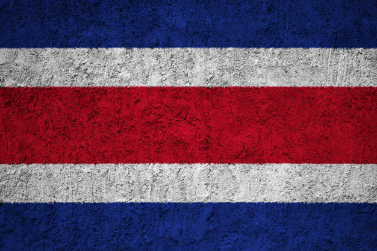

Historia de Costa Rica:La historia de Costa Rica abarca el estudio, descripción y análisis de los principales procesos y eventos históricos de este país centroamericano, desde la ocupación de su actual territorio por cazadores y recolectores hace unos 12.000 años, el surgimiento de las primeras sociedades cacicales prehispánicas, pasando por la llegada, conquista y colonización por parte de los españoles; el proceso de configuración como una nación independiente, la formación y consolidación de su democracia (una de las más antiguas de América), así como sus períodos de crisis sociales y económicas, hasta el presente.
Bandera Actual (1848):La Bandera de Costa Rica está formada por tres colores colocados horizontalmente, una franja roja en el centro entre dos blancas y a cada una de las cuales les sigue una azul. Fue creada el 29 de septiembre de 1848 junto con el Escudo Nacional. La tradición establece que la concepción y diseño de la actual bandera, vigente desde ese año, correspondió a Doña Pacífica Fernández Oreamuno, esposa del primer presidente de Costa Rica; José Castro Madriz, inspirada en la bandera de Francia. La bandera es tricolor por medio de cinco franjas colocadas horizontalmente, una roja en el centro comprendida entre dos blancas, a cada una de las cuales sigue una azul. El ancho de cada faja es la sexta parte del de la bandera, excepto la roja que es de dos sextas.

Escudo nacional de Costa Rica:Escudo de Costa Rica. Símbolos y atributos más sagrados de la nación de Costa Rica que representan su historia, las luchas, los derechos y el progreso social de esta. El significado histórico y patriótico de los símbolos y atributos, de esta nación, expresa las características, raíces y costumbre de su pueblo. Los símbolos nacionales, son los emblemas que representan el espíritu esforzado del pueblo costarricense, amante de la paz y la democracia.

Ave Nacional:El Yigüirro: (Turdus grayi) fue declarada ave nacional como un tributo a su canto potente y melodioso que acompaña la entrada de la época lluviosa. El proponente de la idea fue Elíseo Gamboa Villalobos. La declaratoria se dio por medio de la Ley No. 6031 del 3 de enero de 1977. El Turdus Grayi, es uno de los mejor conocidos porque, aparte de su abundancia, es muy notable por su canto a principios de la época lluviosa y ha sido elegido como el Ave Nacional de Costa Rica. Hay otras especies que también hubieran podido optar por ese título, pero finalmente al yigüirro le correspondió ese honor.
Flor Nacional:La Guaria Morada (Guarianthe skinneri) es la Costa Rica Flor Nacional. Un tesoro nacional en peligro de extinción. Es una hermosa orquídea púrpura, uno de los muchos tipos diferentes de orquídeas que se pueden encontrar en todo el país. Guaria Morada la flor nacional de Costa Rica y nombrada el 15 de junio de 1939. Estas bellas flores nacionales se encuentran durante los meses de enero a marzo. Por lo general produce de cuatro a cinco flores, cada uno dura un tiempo limitado. Grandes, coloridas, flores de forma irregular adornan esta hermosa planta acompañada por su aroma cautivador.
Árbol Nacional:El Guanacaste (Enterolobium cyclocarpum) fue declarado árbol nacional por decreto Nº 7 del 31 de agosto de 1959. Se debió a una campaña realizada por el director del desaparecido diario La Tribuna, como un homenaje al gesto de los guanacastecos de anexarse al país. Tiene corteza gruesa de color gris, áspera, se usa en las tenerías para curtir pieles; además, se machaca, se fermenta y el líquido se usa para lavar la ropa.Tiene hojas grandes, compuestas por numerosas hojas pequeñas, alternas, bipinadas y carecen de pecíolo
Extensión territorial:
Costa Rica, oficialmente República de Costa Rica, es una nación soberana, organizada como una república presidencialista unitaria compuesta por 7 provincias. Ubicada en América Central, posee un territorio con un área total de 51 100 km². Limita con Nicaragua al norte, el mar Caribe al este, Panamá al sureste y el océano Pacífico al oeste. En cuanto a l os bordes marítimos, colinda con Panamá, Nicaragua, Colombia y Ecuador. Cuenta con 5 137 000 habitantes según su última proyección demográfica.11 Su capital, centro político y económico es San José, y su idioma oficial es el e spañol
Provincias:
- San José
- Alajuela
- Cartago
- Herida
- Liberia
- Puntarenas
- Limón
Lugares Turusticos más importantes:
San José:
Entre valles y bosques ubicas San José, la agitada ciudad capital. Es de los sitios turísticos de Costa Rica más conocidos, sede de
diferentes atracciones en donde podrás hacer de tu viaje una experiencia de exploración.
Empieza por descubrir el centro de San José en donde se concentra la mayor cantidad de comercios y vida nocturna de la ciudad
Tamarindo (Provincia de Guanacaste):
Tamarindo solía ser un poblado pesquero pero tuvo un gran incremento turístico gracias a uno de los deportes más practicados en la
localidad: el surf. Hoy es uno de los mayores y mejores sitios turísticos de Costa Rica.
Sus espectaculares playas y su centro lleno de actividades hace que la estadía en la región nunca sea aburrida. Aparte del surf
podrás encontrar diferentes campos de golf, dar paseos en kayak o realizar pesca deportiva.
Jacó (Provincia de Puntarenas):
Dentro de los lugares de Costa Rica se encuentra uno de los destinos de la hermosa península de Nicoya: Jaco. La localidad posee
hermosas playas turquesas y arena blanca en donde reina el surf como deporte principal.
Se constituye de playas de ensueño y muchas actividades para los amantes de la aventura. Entre ellas encontrarás paseos a caballos,
a cuatriciclos, en kayak, en bote por las orillas de las costas y realizar pesca a mar adentro.
Rio Celeste (Provincia de Alajuela):
Entre las atracciones que se pueden encontrar y para disfrutar están los caminos de senderismo, la cascada y los teñideros que es donde
se encuentran los dos ríos y se ve el espectáculo de colores en el agua.
Parte de los atractivos naturales de Costa Rica del Río Celeste es la laguna azul y las aguas termales donde podrás darte baños con barro
azufrado que es muy bueno para la piel.

La Fortuna (Provincia de Alajuela):
Este es uno de los sitios para visitar en Costa Rica que es seguro ya que sus erupciones no son de proporciones peligrosas para los habitantes de la localidad.
La Fortuna es conocida por la gran cantidad de spas con aguas termales que se podrán encontrar a los pies del volcán.
Sin embargo, no todo es fuego en esta zona. Otro de los atractivos de la Fortuna es una enorme cascada de agua fresca de 70 metros de altura.